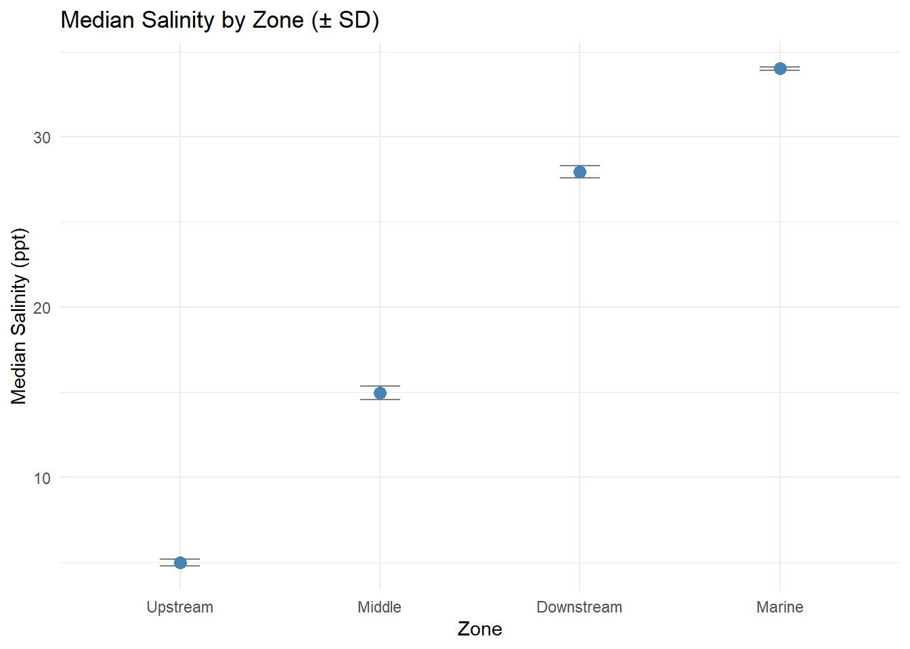
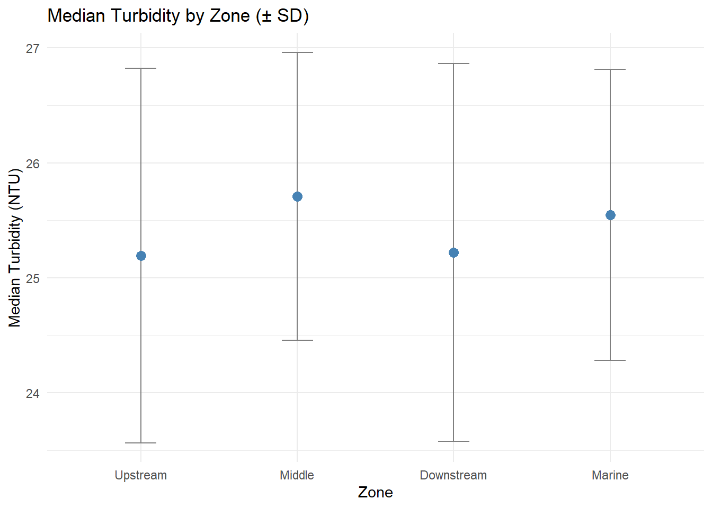
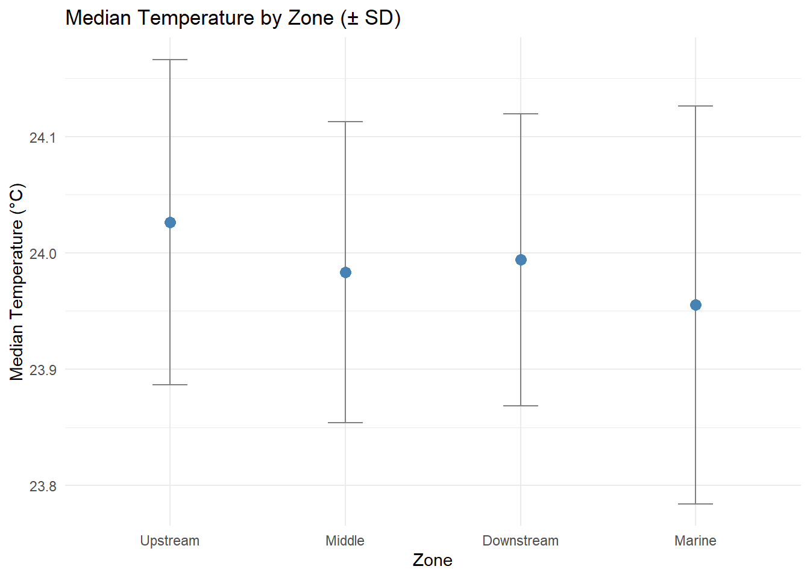
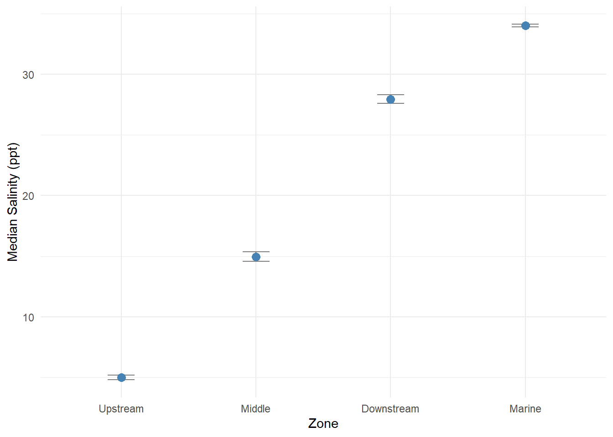
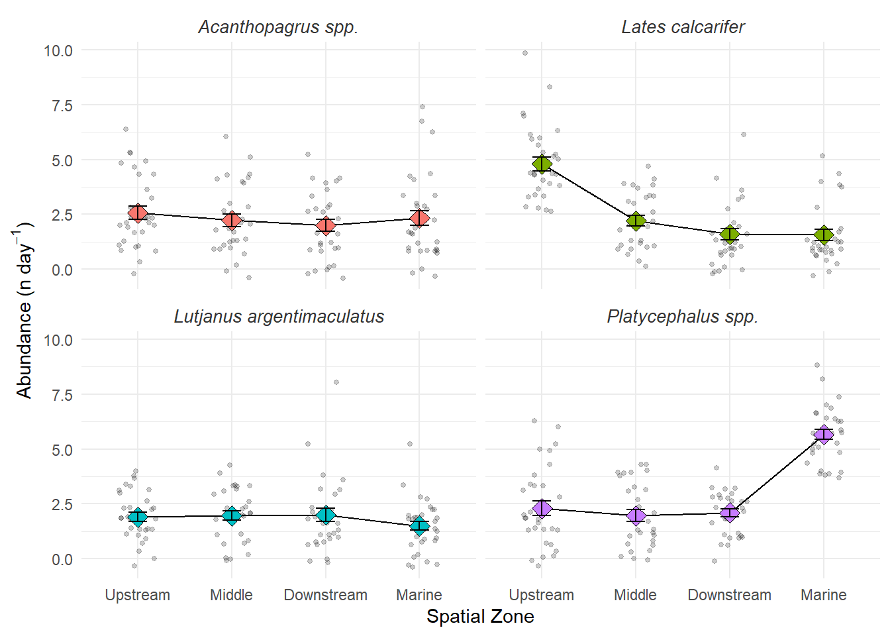

rm(list=ls()) # clear out environment
library(tidyverse)
library(readxl)
library(here)R for Marine Science Workshop 2 - Final Excercise
Keystone exercise: Estuary fish survey - Data rescue mission.
Messy data will be wrangled and final tables and figures will be produced. The data contains information on water quality, and predatory fish assemblages along the Ross River Estuary. The data contains information on 4 different sites and 4 species which was collected on a 30 day period. Along with metadata on the sites and environmental conditions from the sensor data.
Housekeeping and libraries
Load the main dataset
The catch data is split across 4 tabs in one excel file. Load them individually and then combine them together.
catch1 <- read_excel(here("data", "workshop2", "estuary_catch_log.xlsx"), sheet = 1)
catch2 <- read_excel(here("data", "workshop2", "estuary_catch_log.xlsx"), sheet = 2)
catch3 <- read_excel(here("data", "workshop2", "estuary_catch_log.xlsx"), sheet = 3)
catch4 <- read_excel(here("data", "workshop2", "estuary_catch_log.xlsx"), sheet = 4)Inspect each tab to look for abnormalities between workbooks and variable naming issues
Although it does not seem to have any naming issues, it does. We need to combine the data and then check again
Bind rows together
catch_data <- bind_rows(catch1, catch2, catch3, catch4)
rm(catch1, catch2, catch3, catch4) # Clean up the environmentPreliminary checks
catch_data
head(catch_data)
glimpse(catch_data)
str(catch_data)To properly check how many levels of site and species there are, we can do this by checking them by using distinct(), or converting them to factors. Firstly we will look at the distinct values first, in case we need to clean them before converting them to a factor.
catch_data |>
distinct(site)# A tibble: 4 × 1
site
<chr>
1 Lower_ross
2 Mid_Ross
3 ROSS MOUTH
4 Upper Rosscatch_data |>
distinct(species)# A tibble: 4 × 1
species
<chr>
1 barramundi
2 MANGROVE JACK
3 bream
4 flathead After running the above code we can observe we have 4 sites which seem to be different locations on the Ross River, corresponding to selected zones on the estuary. This will need to be checked against the metadata once loaded. Before the data gets joined with the metadata and taxonomic dictionary, we need to fix and clean the site and species names.
Next steps for catch data
We need to fix the site names and place them in a reasonable order. As well as fix the species names by making them consistent and then using the taxonomic dictionary to translate to their scientific names.
Load the metadata
metadata <- read.csv(here("data", "workshop2", "estuary_metadata.csv"))Checks
head(metadata) site_name lat lon zone
1 Upper_Ross -19.31 146.74 Upstream
2 mid_ross -19.28 146.78 Middle
3 LOWER ROSS -19.26 146.81 Downstream
4 ross_mouth -19.25 146.83 Marineglimpse(metadata)Rows: 4
Columns: 4
$ site_name <chr> "Upper_Ross", "mid_ross", "LOWER ROSS", "ross_mouth "
$ lat <dbl> -19.31, -19.28, -19.26, -19.25
$ lon <dbl> 146.74, 146.78, 146.81, 146.83
$ zone <chr> "Upstream", "Middle", "Downstream", "Marine"The site names on the metadata are also all over the place; these will need to be standardised along with the catch_data table before both of the tables get combined.
Fixing site names
The following code will fix the site names and convert any character variables to factor variables.
# Fix site name and variables -data
catch_data <- catch_data |>
mutate(
site = str_to_lower(str_trim(site)), # Converts all letters to lowercase and removes extra spaces
site = str_replace_all(site, " ", "_")) |> # replaces spaces with underscores
mutate(across(where(is.character), as_factor) # Convert all chr to fct
)
# Fix site name and variables - metadata
metadata <- metadata |>
mutate(
site_name = str_to_lower(str_trim(site_name)),
site_name = str_replace_all(site_name, " ", "_")) |>
mutate(across(where(is.character), as_factor) # Convert all chr to fct
)Recheck
# Check data table
str(catch_data)
# Check site names only
catch_data |>
distinct(site)
# Check metadata table
str(metadata)
# Check site names only
metadata |>
distinct(site_name)Now the site names are fixed in both tables, but the variable names still differ (site vs site_name). This can be fixed when we join the datasets together.
Fixing the species names
Using the taxonomic dictionary, we can find the scientific names for the species. We need to match the common names in the catch log to their scientific names before joining the two datasets.
Loading the taxonomic dictionary
species_dict <- read_csv(here("data", "workshop2", "species_dictionary.csv"))
# Check
head(species_dict)# A tibble: 4 × 2
common_name scientific_name
<chr> <chr>
1 barramundi Lates calcarifer
2 mangrove_jack Lutjanus argentimaculatus
3 bream Acanthopagrus spp.
4 flathead Platycephalus spp. After loading the taxonomic dictionary, we can check the species name of both our data and the dictionary.
# Species names we have
catch_data |>
distinct(species)
# Species name from dictionary
species_dict |>
distinct(common_name)As we can see, they both have different names for the species. The common species name variable in the catch data to match those of the dictionary. Here we will fix the species names.
catch_data <- catch_data |>
mutate(
species = str_to_lower(str_trim(species)),
species = str_replace_all(species, " ", "_")
)
catch_data |>
distinct(species)Now we will create a new variable in the catch data by joining it with the taxonomic dictionary to indicate the scientific name.
catch_data <- catch_data |>
mutate(common_name = species) |>
left_join(species_dict, by = join_by(common_name))
# Check that it worked
catch_data |>
distinct(species, scientific_name)# A tibble: 4 × 2
species scientific_name
<chr> <chr>
1 barramundi Lates calcarifer
2 mangrove_jack Lutjanus argentimaculatus
3 bream Acanthopagrus spp.
4 flathead Platycephalus spp. Load the sensor data
The code for this was written in a separate R script, which we can source.
The sourced script now contains daily means of three environmental variables (temperature, salinity, and turbidity) for each site, and any outliers have been removed.
source(here::here("code", "Workshop2_Code", "W2_SensorData_FinalEx.R"))Join catch data with the metadata and sensor data
#Every row in catch_data is kept when using left_join()
catch_data_final <- catch_data |>
left_join(metadata, by = join_by(site == site_name)) |> # This matches the site columns in both datasets
left_join(sensor_daily, by = join_by(site, date)) # Matches rows where both the site and date are the same
# Check
catch_data_final
glimpse(catch_data_final)After checking, we can see that we now have 427 rows of data, whereas we should have 480 [4(spp.) * 4(sites)* 30(surveys) = 480]. This happened because, on some days, there were 0 counts of certain species at different sites.
Wrangle final dataset
We’ll correct the missing rows by replacing any missing data with 0s, resulting in a complete dataset of 480 rows. This will be important for any subsequent analyses and visualisations, as we want to distinguish between true absences and missing data.
catch_data_final <-
catch_data_final |>
complete(
nesting(site, date,
zone, mean_temp, mean_salinity, mean_turbidity),
scientific_name
) |>
mutate(
count = coalesce(count, 0) # Convert the resulting NA counts to 0
)
catch_data_final# A tibble: 480 × 12
site date zone mean_temp mean_salinity mean_turbidity
<chr> <dttm> <fct> <dbl> <dbl> <dbl>
1 lower_ross 2026-05-01 00:00:00 Downst… 23.8 28.4 27.9
2 lower_ross 2026-05-01 00:00:00 Downst… 23.8 28.4 27.9
3 lower_ross 2026-05-01 00:00:00 Downst… 23.8 28.4 27.9
4 lower_ross 2026-05-01 00:00:00 Downst… 23.8 28.4 27.9
5 lower_ross 2026-05-02 00:00:00 Downst… 24.0 27.7 24.1
6 lower_ross 2026-05-02 00:00:00 Downst… 24.0 27.7 24.1
7 lower_ross 2026-05-02 00:00:00 Downst… 24.0 27.7 24.1
8 lower_ross 2026-05-02 00:00:00 Downst… 24.0 27.7 24.1
9 lower_ross 2026-05-03 00:00:00 Downst… 24.2 28.1 20.6
10 lower_ross 2026-05-03 00:00:00 Downst… 24.2 28.1 20.6
# ℹ 470 more rows
# ℹ 6 more variables: scientific_name <chr>, species <chr>, count <dbl>,
# common_name <chr>, lat <dbl>, lon <dbl>After doing this we now have the 480 rows and we have finished our main data wrangling. Now we can proceed with any subsequent analyses to test hypotheses.
Testing out hypotheses
Difference in environmental variables
Firstly, we will check if there is an actual difference in environmental variables among zones.
Salinity
# Creating a summary table
sal_sum <-
catch_data_final |>
group_by(zone) |>
summarise(
sd_salinity = sd(mean_salinity, na.rm = TRUE),
median_salinity = median(mean_salinity, na.rm = TRUE),
.groups = "drop"
)# Create a plot from the summary
sal_sum |>
ggplot(aes(x = zone, y = median_salinity)) +
geom_point() +
geom_errorbar(aes(ymin = median_salinity - sd_salinity, ymax = median_salinity + sd_salinity), width = 0.2) +
theme_minimal() +
labs(title = "Median Salinity by Zone (± SD)",
x = "Zone",
y = "Median Salinity (ppt)")
Turbidity
# Create a summary table
turb_sum <-
catch_data_final |>
group_by(zone) |>
summarise(
sd_turbidity = sd(mean_turbidity, na.rm = TRUE),
median_turbidity = median(mean_turbidity, na.rm = TRUE),
.groups = "drop"
)
# Create a plot
turb_sum |>
ggplot(aes(x = zone, y = median_turbidity)) +
geom_point() +
geom_errorbar(aes(ymin = median_turbidity - sd_turbidity, ymax = median_turbidity + sd_turbidity), width = 0.2) +
theme_minimal() +
labs(title = "Median Turbidity by Zone (± SD)",
x = "Zone",
y = "Median Turbidity (NTU)")
Temperature
# Create summary table
temp_sum <-
catch_data_final |>
group_by(zone) |>
summarise(
sd_temperature = sd(mean_temp, na.rm = TRUE),
median_temperature = median(mean_temp, na.rm = TRUE),
.groups = "drop"
)
# Create plot
temp_sum |>
ggplot(aes(x = zone, y = median_temperature)) +
geom_point() +
geom_errorbar(aes(ymin = median_temperature - sd_temperature, ymax = median_temperature + sd_temperature), width = 0.2) +
theme_minimal() +
labs(title = "Median Temperature by Zone (± SD)",
x = "Zone",
y = "Median Temperature (°C)")
Based on all three graphs, we can deduce that only salinity differs between sites along the estuary. While temperature and turbidity vary very lightly between sites. We will therefore proceed with salinity as our main environmental variable of interest and discuss any other potentially confounding effects of temperature and turbidity in the discussion, as these could also influence patterns of fish assemblages.
Remaking the salinity plot
We will now remake the salinity plot so it will be publication-ready.
sal_sum |>
ggplot(aes(x = zone, y = median_salinity)) +
geom_point() +
geom_errorbar(
aes(
ymin = median_salinity - sd_salinity,
ymax = median_salinity + sd_salinity
),
width = 0.2
) +
theme_minimal() +
labs(
x = "Zone",
y = "Median Salinity (ppt)"
)
Fish abundance patterns
This last graph aims to show the predatory fish abundance across the estuary salinity gradients in the Ross River Estuary system as of May 2026.
# Summary stats
fish_stats <- catch_data_final |>
group_by(zone, scientific_name) |>
summarise(
mean_catch = mean(count),
sem_catch = sd(count) / sqrt(n()),
.groups = "drop"
)
fish_stats# Plot fish stats table
fish_stats |>
ggplot(aes(x = zone, y = mean_catch, fill = scientific_name)) +
geom_line(group = 1) +
geom_point(data = catch_data_final, aes(x = zone, y = count), # adds points from the final dataset
position = position_jitter(width = 0.2), alpha = 0.2, size = 1, inherit.aes = FALSE) +
geom_point(position = "dodge", size = 4, pch = 23) +
geom_errorbar(aes(ymin = mean_catch - sem_catch, ymax = mean_catch + sem_catch), # SE is narrow but allows viewer to see.
position = position_dodge(0.9), width = 0.2) +
facet_wrap(~ scientific_name, scales = "fixed") +
theme_minimal() +
theme(
strip.text = element_text(face = "italic", size = 10, colour = "grey20"), # spp names in italic
legend.position = "none" # legend unnecessary
) +
labs(
x = "Spatial Zone",
# scientific label for y axis of n day -1 use regex to get superscript
y = expression("Abundance (n day"^-1*")"),
# y = "Daily abundance (n day^-1)"
y = "Abundance (per day)"
)